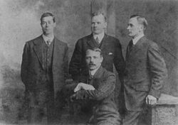
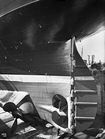
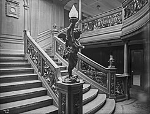
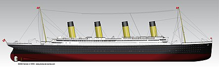
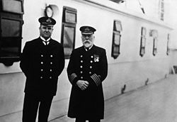

|
 |
 |
Los botes salvavidasnota 335 estaban ubicados en dos grupos, uno hacia la proa y otro hacia la popa. En la parte delantera se hallaban doce botes (seis a cada lado), y hacia popa se hallaban ocho botes (cuatro a cada lado), contando en total con veinte botes salvavidas de tres tipos diferentes: | |
| Los camarotes estándar de primera clase fueron adornados con revestimientos de madera blancos, muebles costosos y otras decoraciones elegantes. Contaban solamente con baños compartidos que disponían de agua caliente y fría. Se contaba además con estufas eléctricas. En el caso de las cuatro suites más lujosas, se utilizaron en las salas de estar unas chimeneas con estufas eléctricas hermosamente empotradas. Como una relativa innovación en los viajes de la época, el Titanic poseía tres ascensores para la primera clase y uno para la segunda clase. El RMS Titanic contaba con 370 camarotes de primera clase, 168 de segunda clase y 297 camarotes compartidos de tercera clase. |
Botes 1 y 2: chinchorros de madera para emergencias, con capacidad para 40 personas. Botes números 3 al 16: hechos de madera, con capacidad para 65 personas. Botes A, B, C y D: botes plegables marca Englehardt con capacidad para 47 personas; estos botes tenían los costados de tela. |  | |
|  | |||
 De entre las casi novecientas personas que formaban parte de la tripulación del Titanic, 66 pertenecían a la tripulación de cubierta (oficiales, marineros, vigías y contramaestres), 325 eran mecánicos (carboneros, fogoneros, engrasadores, electricistas, etc.), y finalmente 494 eran miembros del equipo de atención (sobrecargos, mayordomos, cocineros, operadores de radio, etc.). El comandante del buque era el capitán Edward Smith, el oficial más respetado de la White Star Line y un capitán extremamente popular entre los pasajeros de primera clase, habiendo comandando todos los mayores y más nuevos barcos de la compañía desde 1904. Henry Wilde llegó a última hora para ser el jefe de oficiales y el segundo al mando del Titanic, causando un cambio en la jerarquía de los oficiales. Eso hizo que los tres oficiales más graduados del Titanic fuesen los mismos que habían trabajado previamente en el Olympic (con el tercero, siendo el primer oficial William Murdoch, que originalmente iba a ser asignado como jefe de oficiales). Además de ellos, también estaban a bordo el segundo oficial Charles Lightoller, el tercer oficial Herbert Pitman, el cuarto oficial Joseph Boxhall, el quinto oficial Harold Lowe y el sexto oficial James Moody.